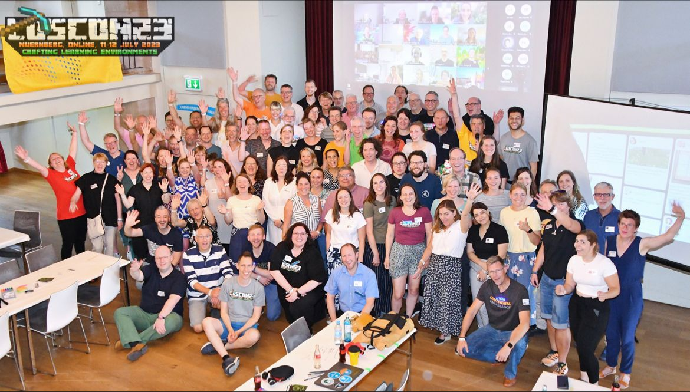
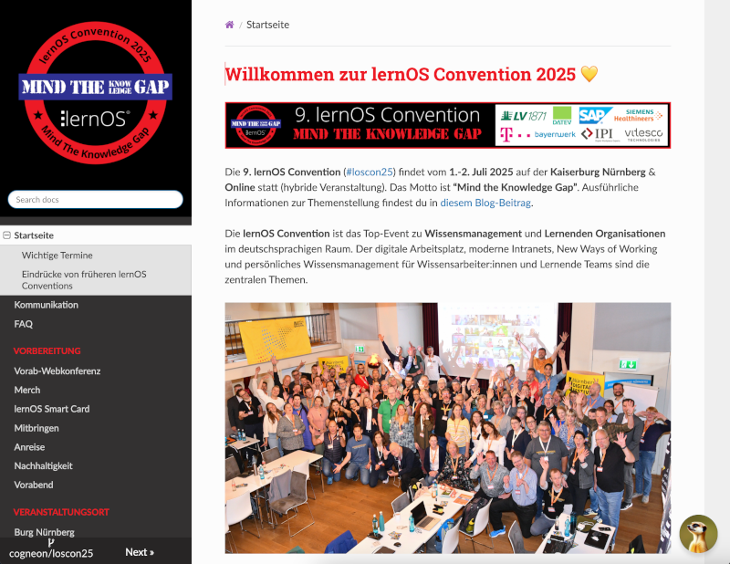
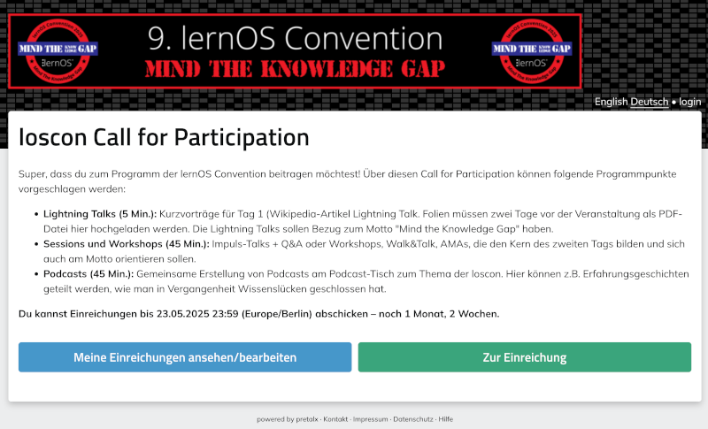

lernOS Convention 2025
Infos & Tickets | Infoseiten & Chatbot
Convention = Zusammenkunft
Die lernOS Convention ist ...
Inhalt
- Orga-Team
- loscon Fahrplan
- loscon Infoseiten & Chatbot
- loscon Programm
- loscon Satelliten
- loscon Circles
- loscon Perfectly Hybrid 4D
- loscon Dokumentation
- Fragen & Antworten
Orga-Team 🧡
- Anke Schiffer-Chollet
- Benedikt Scheerer
- Brigitte Lüdecke
- Christian Kaiser
- Doris Schuppe
- Ellen Braun
- Felix Harling
- Frank Gerich
- Hans Gaertner
- Harald Schirmer (Moderation)
- Marcel Kirchner
- Nicole Denzel
- Sabrina Stang
- Simon Dückert
- Susann Schulz
- Thomas Schmidt
- Victoria Köstner (Moderation)
loscon Fahrplan
- 24.-03.: Start Call for Participation (CfP) (Einreichung Lightning Talks & Sessions)
- 23.05. (23:59h): Ende Call for Participation
- 02.06.: Programm Version 1.0 ist fertig
- 30.06.: Vorabend-Treffen auf der Eröffnung des Nürnberg Digital Festivals
- 01.-02.07.: lernOS Convention 2025 - Motto: Mind the Knowledge Gap!
loscon Infoseiten
Die loscon Infoseiten enthalten alle Informationen, die ihr für die Teilnahme benötigt. Links sind Suche und Navigation, unten rechts unser Chatbot Suri.
loscon Programm
Im Programm gibt es Impulsvorträge, Lightning Talks, Sessions, Workshops und Podcasts ... und alles, was ihr sonst noch organisiert!
loscon Satelliten
Ein loscon Satellit ist ein Ort außerhalb der Burg, an dem zwei oder mehr Personen gemeinsam an der lernOS Convention teilnehmen. Das kann z.B. ein Wohnzimmer, Besprechungsraum, Akademie, Co-Working-Space, Bibliothek oder Volkshochschule sein. Satelliten sind vollständig selbstorganisiert.

Perfectly Hybrid 4D
Mit der lernOS Convention 2025 heben wir unser Konzept "Perfectly Hybrid" auf das nächste Level:
- Vor Ort - Online
- Zentral - Dezentral
- Fremdorganisiert - Selbstorganisiert
- Menschliche Intelligenz - Künstliche Intelligenz (KI)
Promptathon (Hackathon)
Im Promptathon KI nutzen, um Knowledge Gaps zu bearbeiten

loscon Dokumentation
Die Dokumentation der loscon erzeugen wir dieses Jahr gemeinsam mit der KI. Zentraler Ort für Dateien, Texte und Links ist pretalx und die Etherpads zu den Programmpunkten.


Fragen & Antworten